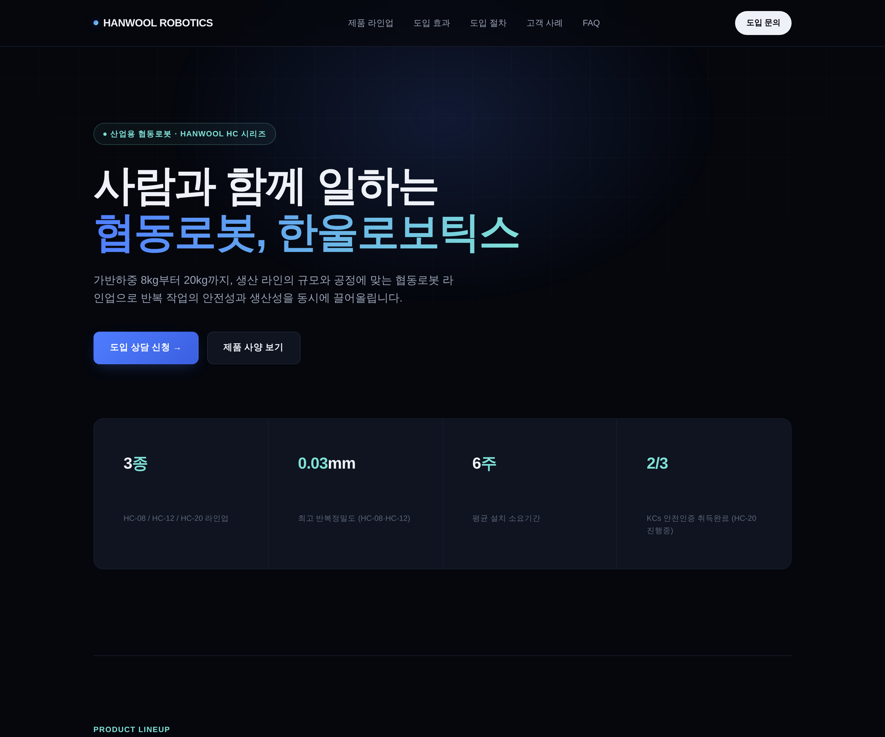

1 · 스킬 없이 먼저 만들기¶
먼저 아무 디자인 스킬 없이 페이지를 만듭니다. 이 결과가 비교의 기준선이 됩니다.
한 가지 미리 말해 두면, 이 단계의 결과물은 아마 꽤 괜찮아 보일 겁니다. "AI가 못 만든다"가 아니라 "AI가 매번 똑같은 걸 만든다"는 것을 눈으로 확인하는 게 이 단계의 목적입니다.
실습 7에서 만든 스킬이 폴더에 남아 있어도 괜찮습니다
주문 통합용 스킬이라 웹페이지 작업에는 끼어들지 않습니다. 이 실습의 비교 조건은 디자인 스킬의 유무입니다.
직접 시켜보세요¶
개요에서 준비한 실습 폴더를 VS Code로 열고 시작합니다. 프롬프트가 참고하는 2.제품사양서.xlsx가 그 폴더에 있어야 합니다.
아래 프롬프트를 그대로 복사해 보내세요. 2단계에서 한 글자도 바꾸지 않고 다시 쓸 거라서, 이번만큼은 여러분 문장으로 바꾸지 말고 그대로 씁니다.
시연용 프롬프트 (1·2단계 공통)
lab8_advanced 폴더의 2.제품사양서.xlsx를 참고해서, 우리 회사(한울로보틱스)의
산업용 협동로봇 제품 소개 페이지를 만들어줘.
고객사 담당자에게 링크로 보낼 페이지야. 요즘 스타일로 세련되게, 테크 기업 느낌으로.
섹션은 이 정도로: 히어로, 제품 라인업, 도입 효과,
도입 절차, 고객 사례, 자주 묻는 질문, 문의.
숫자는 사양서에 있는 값만 쓰고, 없는 값은 지어내지 마.
만드는 방법:
- lab8_advanced/2.비교용/before/ 폴더에 HTML 파일 하나로. CSS와 JS를 그 파일 안에 넣어서,
설치나 빌드 없이 더블클릭하면 바로 열리게.
- 데스크톱 1440px 기준으로 만들고, 모바일에서도 안 깨지게.
- 한글이 깨지지 않게 폰트를 처리해줘.
왜 HTML 파일 하나로 만드나요?
제대로 된 웹사이트는 보통 설치와 빌드 과정이 있는 프로젝트로 만듭니다. 하지만 이 실습의 목적은 스킬 유무에 따른 결과 비교라서, 더블클릭 한 번으로 열리는 파일 하나가 가장 빠르고 확실합니다. 파일 하나도 엄연한 웹페이지입니다. 나중에 진짜로 고객사에 보내려면 이 파일을 회사 서버나 호스팅 서비스에 올려 주소만 받으면 됩니다.
이런 결과가 보이면 정상입니다
2.비교용/before/에 HTML 파일이 생겼고, 더블클릭하면 브라우저에서 열립니다- 첫인상이 그럴듯합니다. "오, 괜찮은데?" 싶은 상태 그대로 다음 절로 넘어가세요
실행 예시¶
이렇게 나오면 됩니다

AI 티 찾아보기¶
방금 만든 페이지를 열어 두고, 아래 목록과 대조해 보세요. 이 목록은 2단계에서 설치할 스킬이 실제로 금지하는 항목들입니다. 몇 개나 해당하는지 세어 보세요.
- 배경이나 버튼에 보라색·파란색 그라데이션이 있다
- 히어로(첫 화면)가 가운데 정렬이고, 제목 아래 버튼 두 개가 나란히 있다
- 기능·효과가 똑같은 크기의 카드 3개로 나란히 놓여 있다
- 고객 사례에 "김OO 물류팀장" 같은 무난한 가상 인물이 등장한다
- 99%, 50% 감소 같은 딱 떨어지는 숫자가 있다 (사양서에 없는 값이면 실습 6에서 잡던 바로 그 "지어낸 숫자"입니다)
- 섹션마다 제목 위에 작은 대문자 라벨이 반복된다
- 제품 화면이 있어야 할 자리에 네모 상자로 흉내 낸 가짜 화면이 있다
이게 왜 '티'인가요?
하나하나는 흠이 아닙니다. 문제는 어떤 주제를 시켜도 이 조합이 똑같이 나온다는 것입니다. AI는 학습한 것 중 가장 무난한 평균을 뱉는데, 웹 디자인에서 그 평균이 바로 이 목록입니다. 그래서 AI가 만든 페이지끼리는 회사가 달라도 서로 닮아 있습니다.
글에도 똑같은 티가 있습니다
2단계에서 설치할 스킬의 금지 목록에는 줄표(—) 남용 금지도 들어 있습니다. AI가 쓴 글에서 자주 보이는 바로 그 버릇입니다. AI 티는 디자인에도 글에도 같은 방식으로 남습니다.
체크포인트¶
-
2.비교용/before/에 HTML 파일이 생겼고 더블클릭으로 열린다 - 위 목록에서 3개 이상을 내 결과물에서 직접 찾았다
- 페이지의 숫자 중 사양서에 없는 값이 있는지 확인했다
- 이 파일을 지우지 않고 그대로 두었다 (2단계에서 나란히 비교)